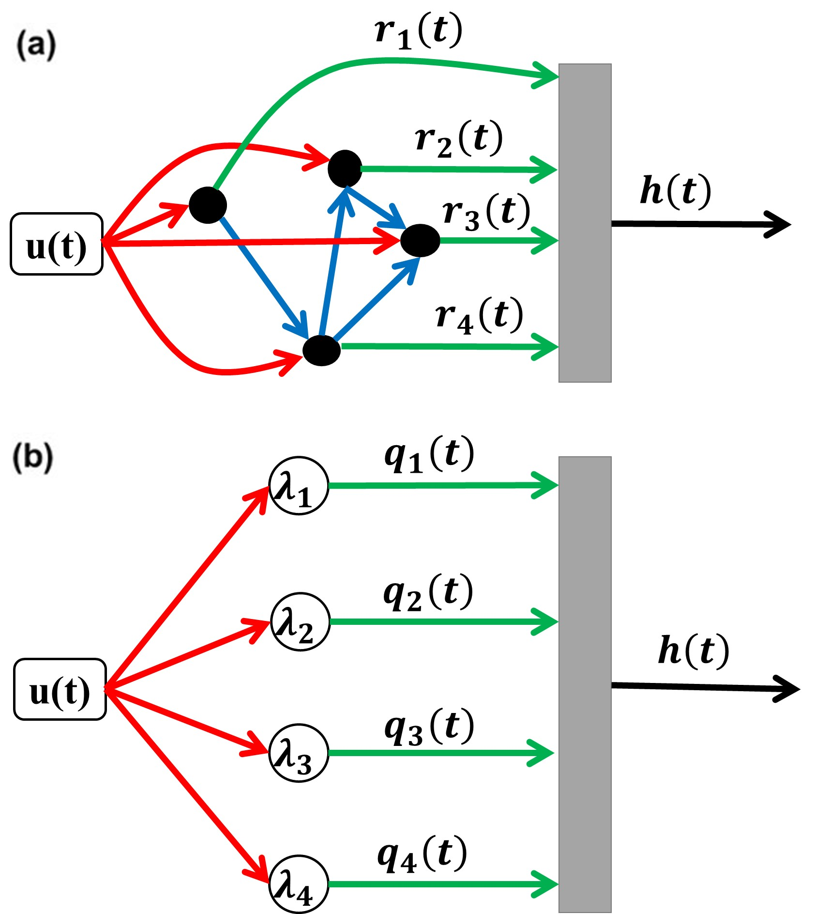
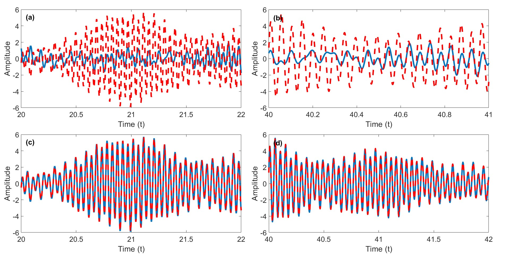

<div id="portfolio-page" class="portfolio-page-content">
    <div class="container">
        <!-- Portfolio Navigation -->
        <div class="portfolio-nav">
            <div id="portfolio-close-button" class="portfolio-close-button">
                <a href="#portfolio"><i class="fa fa-close"></i></a>
            </div>
        </div>

        <!-- Portfolio Title -->
        <div class="portfolio-title">
            <h1>Completed Research Project</h1>
        </div>

        <div class="row">
            <!-- Images / Carousel -->
            <div class="col-sm-7 col-md-7 portfolio-block">
                <div class="owl-carousel portfolio-page-carousel">
                    <div class="item">
                        
                    </div>
                    <div class="item">
                        
                    </div>
                    <div class="item">
                        
                    </div>
                </div>

                <script type="text/javascript">
                    jQuery(document).ready(function($){
                        $('.portfolio-page-carousel').owlCarousel({
                            smartSpeed: 1200,
                            items: 1,
                            loop: true,
                            dots: true,
                            nav: true,
                            navText: false,
                            margin: 10
                        });
                    }); 
                </script>
            </div>

            <!-- Project Description -->
            <div class="col-sm-5 col-md-5 portfolio-block">

                <ul class="project-general-info">
                    <li>
                        <i class="fa fa-user"></i> 
                        <strong>Collaborators:</strong>
                        <a href="https://scholar.google.com/citations?user=PLRBMP0AAAAJ&hl=en" target="_blank">Nicholas Mecholsky</a>, 
                        <a href="https://scholar.google.com/citations?user=-pHeI6oAAAAJ&hl=en" target="_blank">Francesco Sorrentino</a>,
                        <a href="https://scholar.google.com/citations?user=_oO6FPUAAAAJ&hl=en" target="_blank">Amirhossein Nazerian</a>, 
                        <a href="https://scholar.google.com/citations?user=s8FMWa4AAAAJ&hl=en" target="_blank">Saif R. Kazi</a>
                    </li>  
                    <li>
                        <i class="fa fa-calendar"></i> May 2024 - September 2025
                    </li>
                    <li><p><i class="fa fa-globe"></i> 
                        <a href="https://github.com/SahandTerami/LinearReservoirOptimization" target="_blank">Project Codes</a>
                    </li>
                </ul>
                <div class="block-title">
                    <h3>Motivation</h3>
                </div>
                <p class="text-justify">
                    Machine learning has become a fundamental approach for modeling, prediction, and control, enabling systems to learn from
                    data and perform complex tasks. Reservoir computing is a machine learning tool that leverages high-dimensional dynamical
                    systems to efficiently process temporal data for prediction and observation tasks. Traditionally, the connectivity of the
                    network that underlies a reservoir computer (RC) is generated randomly, lacking a principled design. In this research, we
                    focused on optimizing the connectivity of a linear RC to improve its performance and interpretability.
                </p>
                <div class="block-title">
                    <h3>Results</h3>
                </div>
                <p class="text-justify">
                    We improved the performance and interpretability of a linear RC by optimizing its topology, which we achieved by decoupling
                    the RC dynamics into a number of independent modes. We then proceed to optimize each one of these modes to perform a given
                    task, which corresponds to selecting an optimal RC connectivity in terms of a given set of eigenvalues of the RC adjacency
                    matrix. Simulations on networks of varying sizes showed that the optimized RC significantly outperforms randomly constructed
                    reservoirs in both training and testing phases and often surpasses nonlinear reservoirs of comparable size. This approach
                    provides both practical performance advantages and theoretical guidelines for designing efficient, task-specific, and
                    analytically transparent RC architectures. We also showed that our method can be extended to nonlinear RC, but with a new formulation.
                    </p>
                <!-- Software and Frameworks -->
                <div class="tags-block">
                    <div class="block-title">
                        <h3>Software and Frameworks:</h3>
                    </div>
                    <ul class="tags">
                        <li><a>MATLAB</a></li>
                        <li><a>Julia</a></li>
                        <li><a>Ipopt and JuMP Libraries</a></li>
                    </ul>
                </div>
            </div>
        </div>
    </div>
</div>
